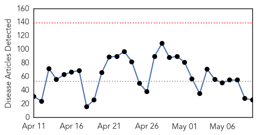
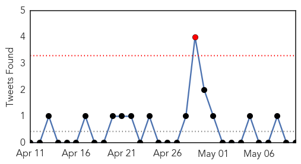

30 Day Trends
Web: 0 alerts, 0 warnings
Twitter: 1 alerts, 0 warnings
Top Articles:
- 0.917
- Chicago Tribune
- 0.917
- Chicago Tribune
- 0.917
- Chicago Tribune
- 0.910
- The world windows to Thailand
- 0.897
- CDC To Help Washington State Find Source Of E. Coli Outbreak At Milk Fest
- 0.878
- Ashley Olsen battles Lyme disease caused by tick bite: Diagnosed in late stages
- 0.875
- Doctor warns of ticks, Lyme disease
- 0.869
- Over 600 new HIV cases recorded in March
- 0.850
- Follow Best Practices before Naming New Human Infectious Diseases, says WHO
- 0.707
- Hampshire GP calls for more support for victims of Nepal earthquake
- 0.700
- ‘I could drop dead’: Woman’s 15 year battle with Lyme disease
- 0.692
- Sudan Vision Daily
- 0.685
- Endeavor Chile premia a los mejores en su encuentro anual
- 0.659
- NH Voice
- 0.641
- Wet weather blamed for parasites in Sydney’s drinking water
- 0.603
- Epidemic Prevention and Reconstruction in Nepal
- 0.602
- S. Africa’s opposition party elects first black leader
- 0.596
- Houthi allies accept five-day truce in Yemen proposed by Saudi Arabia
- 0.596
- Former Turkish president Evren, symbol of military era, dies at 97
- 0.596
- NATO and EU call for calm after deadly Macedonia clashes
- 0.595
- South Sudan’s Jonglei state pushes for better health services
- 0.592
- UN revises appeal amount to $423 million for quake-hit Nepal
- 0.590
- Pregnant women vulnerable after Nepal quake
- 0.554
- Ondo: How We Curtailed Ailment from Methanol Poison, Articles
- 0.531
- UN revises appeal amount to $423 million for quake-hit Nepal
- 0.528
- Health department recommends testing well water for arsenic levels
Top Tweets:
-
No tweets found for May 10, 2015
Web/News Articles
Tweets
Article Locations